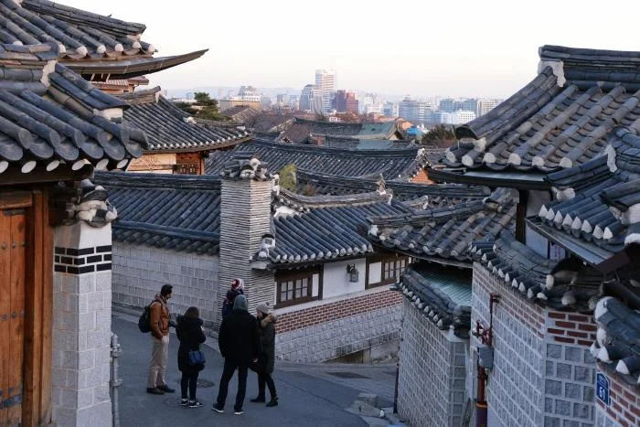
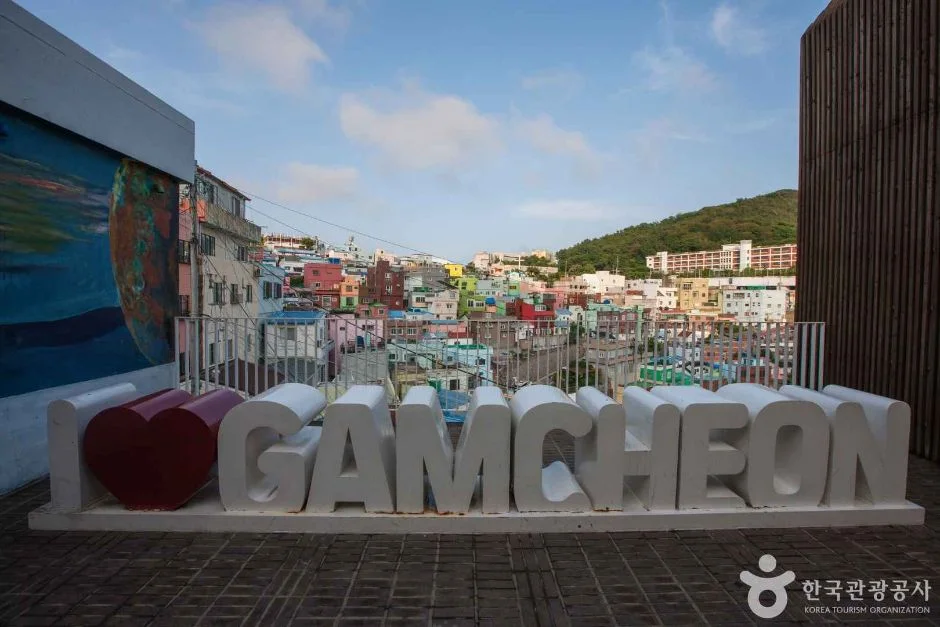
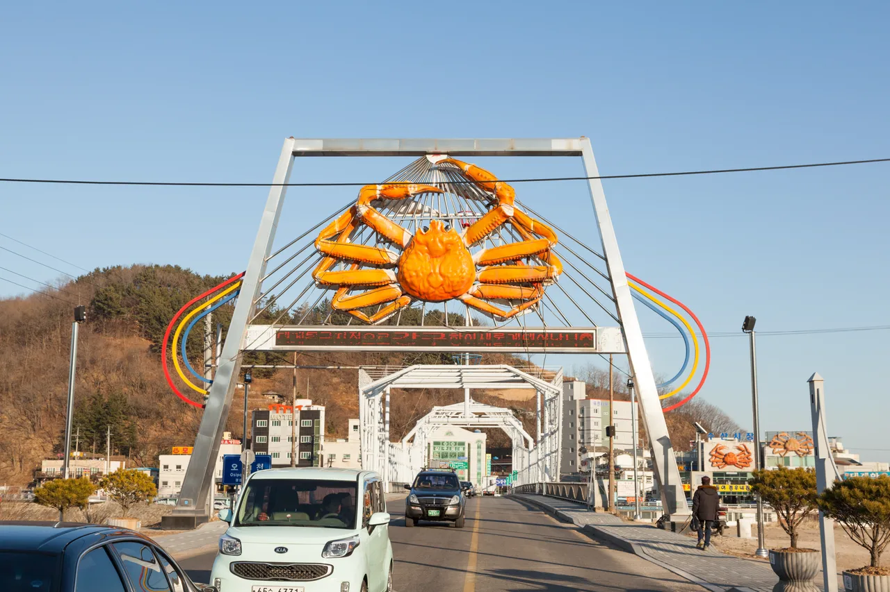
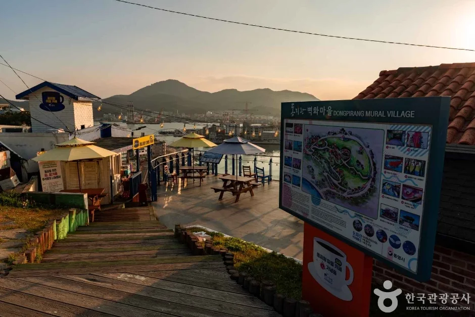
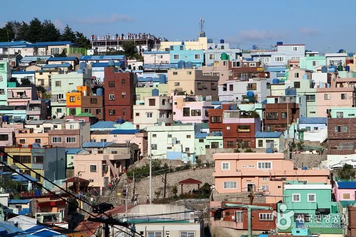

▲ 구도심 골목. 진입은 되지만 세울 곳이 없고, 되돌아 나오기도 어렵다 ⓒ 한국관광공사 (공공누리 제1유형)
차를 고를 때 우리는 대개 큰 쪽을 봅니다. 짐이 더 들어가고, 사람이 더 타고, 고속도로에서 편합니다.
그런데 여행지에서는 반대가 되는 순간이 있습니다. 진입로 폭이나 회전 공간이 모자라 들어갔다가 되돌아 나와야 하는 곳이 생각보다 많습니다.
1. 큰 차가 막히는 자리
문제가 생기는 곳은 대체로 세 갈래입니다.
| 유형 | 어려운 이유 |
|---|---|
| 구도심 골목 | 폭이 좁고 회차 공간이 없음 — 후진으로 빠져나와야 함 예: 서울 북촌 · 전주 한옥마을 |
| 비탈 마을 | 경사와 급커브가 겹침 — 예: 부산 감천문화마을 · 통영 동피랑 |
| 산간 진입로 | 편도 1차로에 커브 반경이 작음 · 대향차 교행 곤란 |
| 노후 주차장 | 주차면 폭이 좁아 문을 못 여는 경우 |

▲ 서울 북촌. 차 한 대 폭의 경사 골목에 보행자가 그대로 섞인다 ⓒ 한국관광공사 (공공누리 제1유형)
📍 전폭보다 회전 반경이 문제입니다
좁은 길에서 실제로 발목을 잡는 것은 차의 폭이 아니라 최소 회전 반경인 경우가 많습니다.
회전 반경은 축간거리(휠베이스)가 길수록 커집니다. 경차는 전장이 짧은 만큼 휠베이스도 짧아 한 번에 도는 반면, 대형 SUV는 몇 번을 끊어 돌아야 합니다. 골목에서는 이 한 번이 통행 전체를 막습니다.
차종별 정확한 수치는 제조사 제원표에 '최소회전반경'으로 표기되므로, 좁은 코스를 자주 간다면 구매 전 확인해둘 만합니다.
📍 아예 못 들어가는 시간대도 있습니다
차 크기와 무관하게 통행 자체가 제한되는 구간이 있습니다. 서울 북촌한옥마을은 주민 생활 보호를 위해 북촌로11길 일대에 관광객 제한구역과 제한시간을 두고 있습니다.
제한 시간은 17:00부터 다음 날 10:00까지입니다. 저녁에 도착하는 일정이라면 차를 어디에 세우느냐보다 들어갈 수 있느냐가 먼저입니다. 구도심 관광지는 이런 규정이 수시로 바뀌므로 출발 전 확인이 필요합니다.
2. 통행료 50%, 민자도 같습니다
비용 차이는 고속도로에서 가장 크게 벌어집니다. 경차는 통행료가 50% 할인됩니다.
주목할 점은 민자 고속도로에도 같은 비율이 적용된다는 것입니다. 민자 구간은 재정 구간보다 요금이 훨씬 비싼데, 할인율이 같으니 절감액은 오히려 민자에서 큽니다.

▲ 경차 기준은 배기량 1,000cc 미만이다. 전기 경차는 배기량 대신 별도 기준이 적용된다 ⓒ 현대자동차그룹

▲ 부산 감천문화마을. 비탈을 계단처럼 올라가는 구조라 진입로가 좁고 경사가 급하다 ⓒ 한국관광공사 (공공누리 제1유형)
3. 주차장은 50%, 환승은 80%
| 구분 | 할인 |
|---|---|
| 전국 공영주차장 | 50% |
| 지하철 환승 주차장 | 최대 80% |
여행에서 체감이 큰 쪽은 관광지 공영주차장입니다. 성수기 명소는 하루 주차료가 만 원을 넘는 곳도 있습니다. 그 절반이면 차이가 분명합니다.

▲ 박스형 경차는 전장이 짧으면서 실내 높이를 확보한다. 짐 적재에서 세단형 경차와 갈리는 지점이다 ⓒ 기아
▲ 경주 황리단길. 노면에 진입금지 표시가 있고 보행자가 차도까지 나온다 ⓒ 한국관광공사 (공공누리 제1유형)
4. 유류세는 연 30만 원까지
| 연료 | 환급액 |
|---|---|
| 휘발유·경유 | ℓ당 250원 |
| LPG | ℓ당 160.82원 |
| 연간 한도 | 30만 원 |
| 조건 | 경차사랑카드 등 유류구매카드로 주유 |
📍 카드를 안 만들면 못 받습니다
유류세 환급은 자동으로 되지 않습니다. 지정된 유류구매카드로 결제해야 적용됩니다.
경차를 타면서도 이 카드를 만들지 않아 환급을 못 받는 경우가 흔합니다. 연 30만 원 한도를 다 쓰려면 연 1,200ℓ가량을 주유해야 하는데, 장거리 여행이 잦다면 채우기 어렵지 않은 양입니다. 이 제도는 2026년 12월 말까지 적용됩니다.
5. 산간 진입로에서의 차이
휴양림과 계곡, 사찰 진입로는 대부분 편도 1~2차로입니다. 폭은 좁고 커브는 급합니다.
문제는 교행입니다. 마주 오는 차가 있을 때 한쪽이 비켜줘야 하는데, 차가 클수록 비켜줄 자리를 찾기 어렵습니다. 단풍철이나 성수기에는 이 지점에서 통행이 통째로 멈춥니다.

▲ 산간 휴양림 진입로. 성수기에는 이런 구간이 병목이 된다 ⓒ 한국관광공사 (공공누리 제1유형)

▲ 국도는 마을과 상권을 그대로 통과한다. 주차 공간이 도로변뿐인 경우가 많다 ⓒ 한국관광공사 (공공누리 제1유형)

▲ 통영 동피랑. 골목이 수십 갈래로 갈리는 언덕 마을이라 차는 아래에 두고 걸어 올라간다 ⓒ 한국관광공사 (공공누리 제1유형)
6. 경차가 불리한 구간도 있습니다
| 상황 | 내용 |
|---|---|
| 장거리 고속 주행 | 풍절음·직진 안정성에서 불리 |
| 측풍 | 차체가 가벼워 바람에 밀림 — 해안·교량 구간 주의 |
| 짐 | 4인 탑승 시 트렁크 여유 거의 없음 |
| 오르막 | full 승차 시 가속 여유 부족 |
결국 코스의 성격이 정합니다. 고속도로로 멀리 가서 넓은 주차장에 세운다면 큰 차가 낫습니다. 반대로 구도심과 산간을 파고드는 여행이라면 경차가 이깁니다.

▲ 출발 전 지도 위성사진으로 진입로 폭과 회차 공간을 확인하면 실패가 줄어든다 ⓒ 한국관광공사 (공공누리 제1유형)
7. 정리
경차는 구도심 골목과 산간 진입로, 노후 주차장에서 확실히 유리합니다. 전폭보다 최소 회전 반경이 갈리는 지점으로, 경차 4.5m 안팎과 대형 SUV 5.9m 이상의 차이가 골목에서 드러납니다.
비용에서는 고속도로 통행료 50% 할인이 가장 큽니다. 민자 고속도로에도 같은 비율이 적용돼 절감액은 민자에서 더 커집니다. 공영주차장은 50%, 지하철 환승 주차장은 최대 80%입니다.
유류세는 경차사랑카드 등 유류구매카드로 주유해야 환급됩니다. 휘발유·경유 ℓ당 250원, LPG 160.82원이며 연간 한도는 30만 원입니다. 반대로 장거리 고속 주행과 측풍, 적재에서는 불리하므로 코스 성격에 따라 판단해야 합니다.